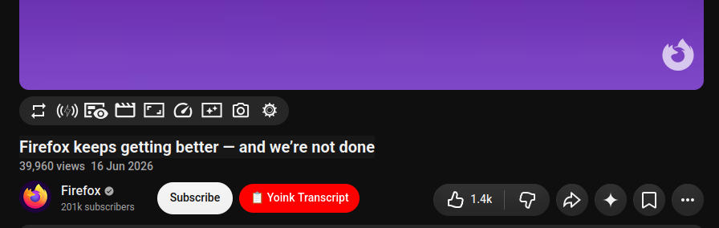

Copy YouTube video transcripts to your clipboard with one click. No account, no external service.

Adds a convenient “📋 Yoink Transcript” button next to the Subscribe button. When clicked, it opens the transcript panel, extracts the text, removes timestamps, and copies the clean transcript as plain text. All processing happens locally in your browser.